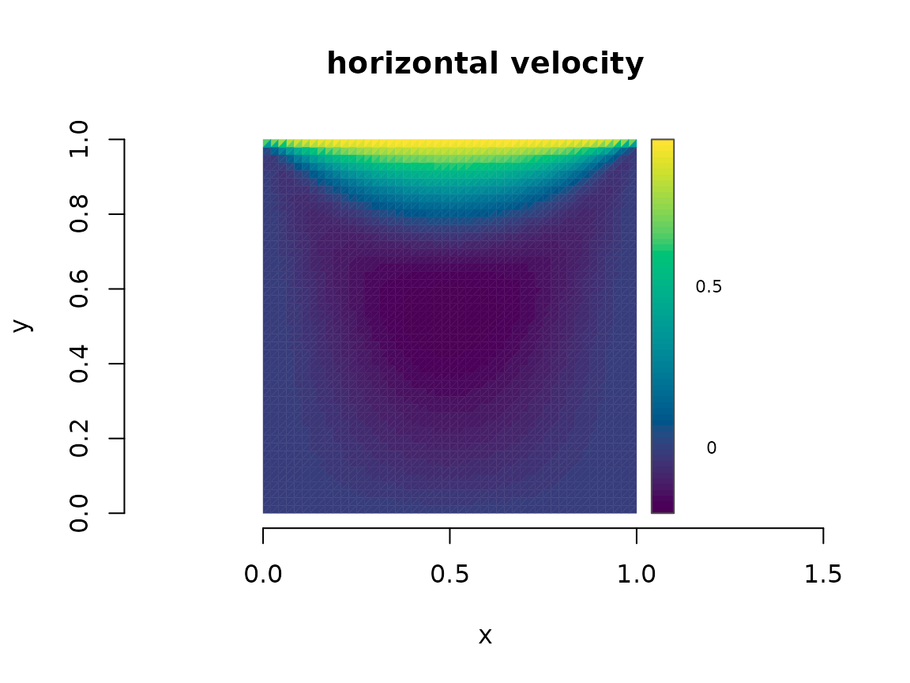

Taylor-Hood elements
stokes_problem() poses the incompressible Stokes
equations
-\nabla\cdot(\nu\nabla\mathbf u) + \nabla p = \mathbf f, \qquad
\nabla\cdot\mathbf u = 0 .
Equal-order velocity and pressure are unstable (they violate the
inf-sup condition), so the velocity is continuous P2 and the pressure
continuous P1: the Taylor-Hood pair. Velocity conditions come from
velocity_bc(), on any components.
traction_bc() prescribes the pseudo-traction (\nu\nabla\mathbf u - pI)\mathbf n, and
boundary parts without a condition get the do-nothing outflow condition
(zero pseudo-traction). When the velocity is prescribed on the whole
boundary, the pressure is determined only up to a constant and is fixed
by a zero-mean gauge.
Convergence
A manufactured solution with a stream function \psi = x^2(1-x)^2y^2(1-y)^2 and pressure p = xy - 1/4 shows the optimal rates: order 3 for the velocity in L^2 and order 2 for the pressure.
a <- function(x) x^2 - 2 * x^3 + x^4; a1 <- function(x) 2 * x - 6 * x^2 + 4 * x^3
a2 <- function(x) 2 - 12 * x + 12 * x^2; a3 <- function(x) -12 + 24 * x
nu <- 0.5
ux <- function(x, y) a(x) * a1(y)
pex <- function(x, y) x * y - 0.25
f <- function(x, y) cbind(-nu * (a2(x) * a1(y) + a(x) * a3(y)) + y, nu * (a3(x) * a(y) + a1(x) * a2(y)) + x)
res <- t(sapply(c(4, 8, 16), function(n) {
s <- solve_pde(stokes_problem(pde_mesh_rectangle(nx = n), viscosity = nu, body_force = f,
bcs = velocity_bc(c(0, 0))))
c(n = n, velocity = errornorm(s$velocity$ux, ux), pressure = errornorm(s$pressure, pex),
divergence = s$diagnostics$divergence_norm)
}))
data.frame(res, rate_u = c(NA, log2(res[-3, 2] / res[-1, 2])), rate_p = c(NA, log2(res[-3, 3] / res[-1, 3])))
#> n velocity pressure divergence rate_u rate_p
#> 1 4 2.395829e-04 0.0042453790 0.0064125890 NA NA
#> 2 8 3.015496e-05 0.0010175473 0.0018191755 2.990057 2.060797
#> 3 16 3.748696e-06 0.0002524303 0.0004741288 3.007935 2.011139Taylor-Hood elements satisfy the incompressibility constraint only weakly; the diagnostics report \|\nabla\cdot\mathbf u_h\|_{L^2}, which decreases with the mesh.
Solvers
The default is sparse LU on the saddle-point matrix.
method = "gmres" uses GMRES right-preconditioned by the
block-diagonal matrix \mathrm{diag}(A,
M_p/\nu): the velocity Laplacian (factorized once) and the
pressure mass matrix, which is spectrally equivalent to the Schur
complement. The iteration count does not grow with the mesh:
sapply(c(8, 16, 32), function(n) {
s <- solve_pde(stokes_problem(pde_mesh_rectangle(nx = n), viscosity = nu, body_force = f,
bcs = velocity_bc(c(0, 0))), method = "gmres")
s$diagnostics$solver$iterations
})
#> [1] 37 41 43Channel flow and the lid-driven cavity
A parabolic inflow profile with do-nothing outflow reproduces Poiseuille flow, u = y(1-y) and p = -2\nu x + c, exactly because it lies in the discrete spaces:
mc <- pde_mesh_rectangle(c(0, 2), c(0, 1), nx = 8, ny = 4)
sc <- solve_pde(stokes_problem(mc, bcs = list(velocity_bc(c(0, 0), c("top", "bottom")),
velocity_bc(function(x, y) cbind(y * (1 - y), 0), "left"))))
sc
#> <pde_stokes_solution> Taylor-Hood P2-P1, 351 dofs; solver lu (solved)
#> ||div u_h|| = 3.19e-15; pressure gauge: none
errornorm(sc$velocity$ux, function(x, y) y * (1 - y))
#> [1] 4.485823e-16
#> attr(,"norm")
#> [1] "L2"
#> attr(,"gradient")
#> [1] "exact"In the lid-driven cavity the top wall moves and every other wall is fixed:
cav <- solve_pde(stokes_problem(pde_mesh_rectangle(nx = 24),
bcs = list(velocity_bc(c(0, 0)), velocity_bc(c(1, 0), "top"))))
plot(cav$velocity$ux, main = "horizontal velocity")
The corners where the moving lid meets the fixed walls are singular, so the pressure is unbounded there; the velocity remains well behaved.